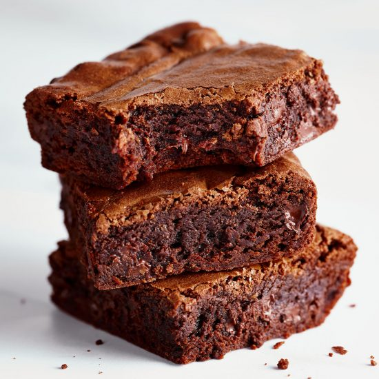

Brownies
These brownies require one bowl and come
together in minutes. There’s also a good chance
you already have the ingredients on hand.
Let me walk you through the steps for making them.

Ingredients
- ½ cup butter
- 1 cup white sugar
- 2 eggs
- 1 teaspoon vanilla extract
- ⅓ cup unsweetened cocoa powder
- ½ cup all-purpose flour
- ¼ teaspoon salt
- ¼ teaspoon baking powder
Steps
- Preheat the oven to 350 degrees F (175 degrees C).
Grease a 9x13-inch pan.
- Combine the melted butter, sugar, cocoa powder,
vanilla, eggs, flour, baking powder, and salt.
- Bake in preheated oven for 20 to 30 minutes or
until a toothpick inserted in the center comes
out with crumbs, not wet.